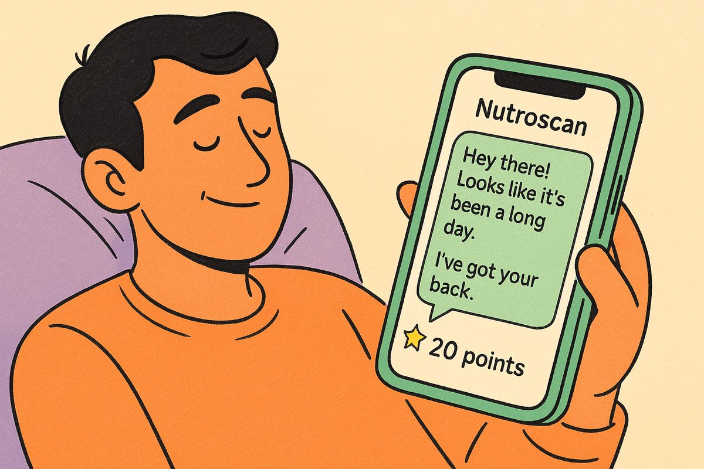
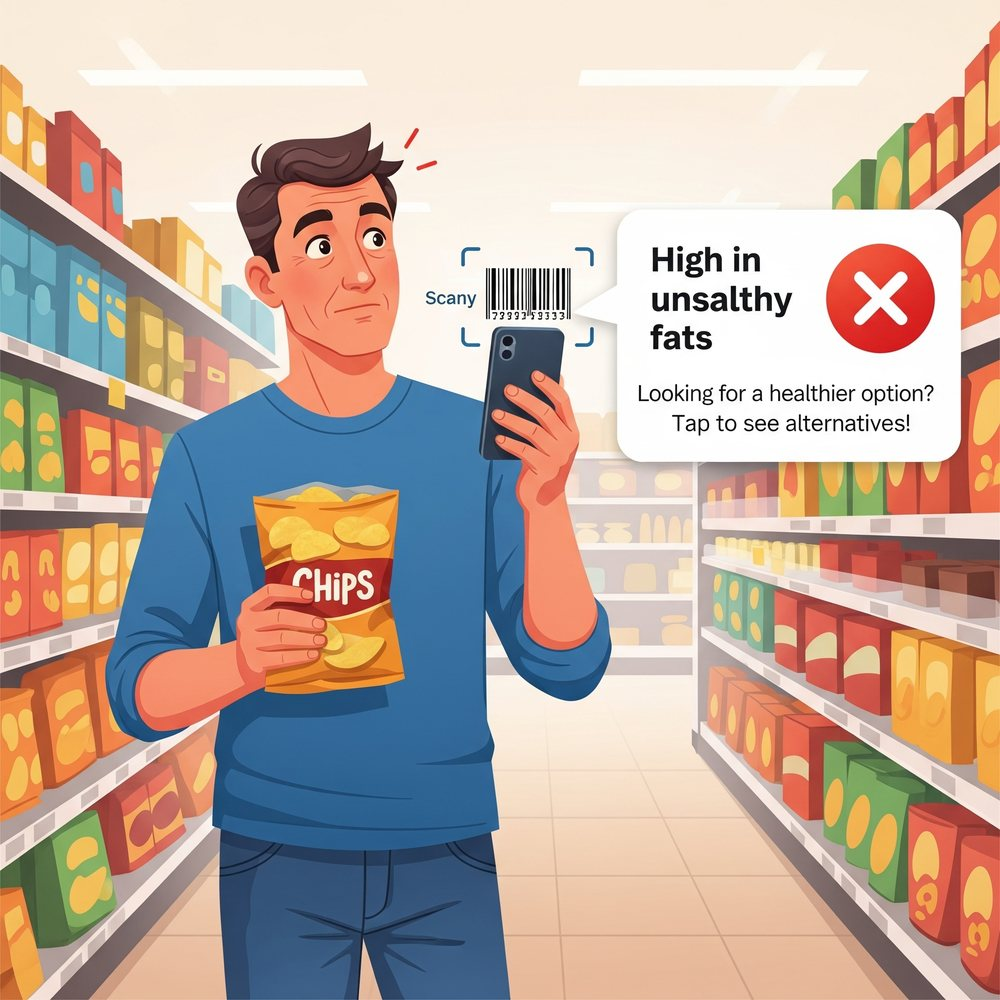
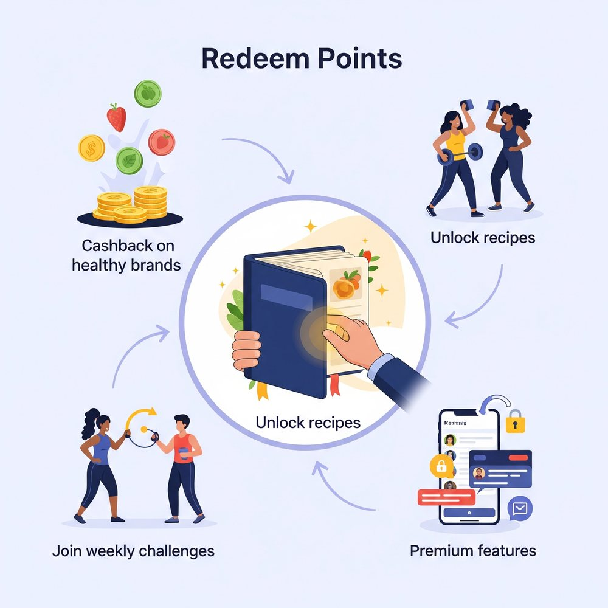
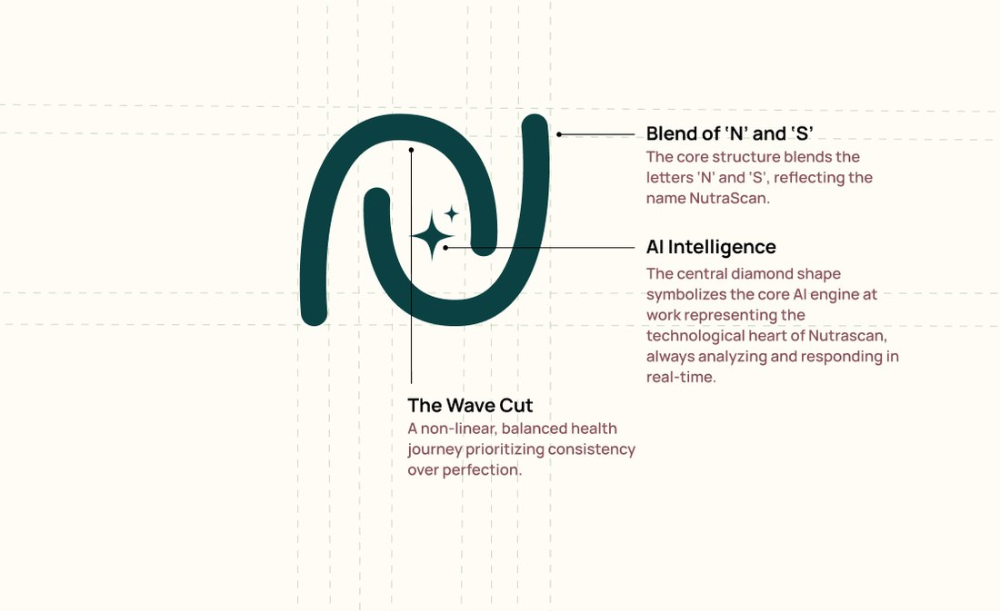
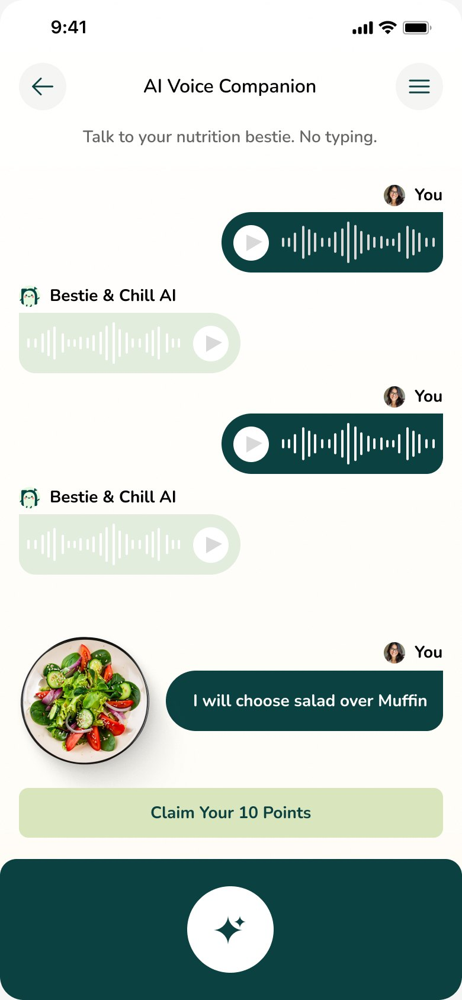
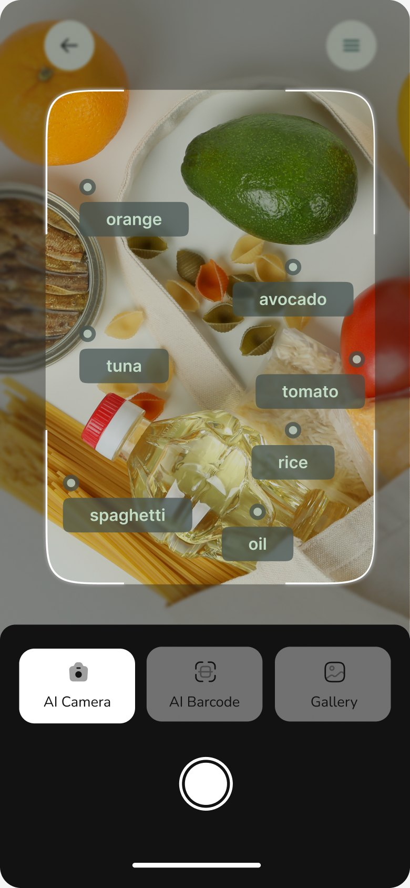

Health & nutrition · Mobile AI · Team Sixth Sense
NutraScan
An AI food buddy that scans your fridge, reads your mood and turns what you have into healthier meals.

01 · Overview
Small, consistent steps towards health
Most health apps ask you to count. NutraScan asks how you feel, looks in your fridge and suggests a healthy meal you can actually make, then turns good habits into weekly challenges.
- Role
- Product designer
- Team
- Team Sixth Sense
- Platform
- Android & iOS app
- Scope
- Brand · UX · UI
- Tools
- Figma, ChatGPT & Gemini (storyboard)
02 · Who it's for
Meet Garima
29, working professional, lives alone
- Always rushing between meetings
- Eats out often
- Wants to eat better, hates calorie logging
- Overwhelmed at grocery stores
- Deleted 3 food apps last month
03 · Problem
Health apps feel like homework
- Logging is tediousGarima quit three apps because typing every meal was a chore.
- Too much dataLeaders like HealthifyMe overwhelm casual users with numbers.
- Weak on local foodApps like Lifesum miss Indian and home-cooked meals.
04 · Approach
How we tackled it
- Competitor SWOTHealthifyMe and Lifesum: what to keep, what to drop.
- Talk or scan, never typeVoice and camera replace manual logging.
- Mood before metricsOpen on "what's the vibe today?", not a calorie count.
- Habits as playPoints, challenges and badges for small wins.
05 · Concept storyboard
A day in Arpit's life
Before a single screen, we told the idea as a story: three ordinary moments where one small nudge changes the choice.
-

Morning
"I just want to make one better choice."
Yesterday he skipped breakfast: chai and a muffin. Today he opens NutraScan, already logged in.
NutraScanGood morning, Arpit! Let's swap one thing today: boiled egg or peanut-butter toast?
+1 pointHe taps yes. Logged automatically, no typing.
-

Afternoon
"Is this protein bar even healthy?"
Lost in the supermarket aisle, he points his phone at the barcode.
NutraScanThis bar is high in sugar. Want a better one with more protein?
+5 pointsHe picks the alternative and adds it to his healthy list. Bonus: a 2-day streak.
-

Evening
"What do I even eat tonight?"
Tired from work, about to order pasta again. He presses the mic: "What's a healthy dinner I can order fast?"
NutraScanTry grilled paneer with roti. Fills you up and keeps your streak going!
+5 pointsHe taps Order and unlocks the "Takeout Tamer" badge.
Healthy choices, without missing out.
The gamification loop



Why users stay
Brand
A buddy, not a coach or a calculator

- N + S blendThe mark joins the letters of NutraScan.
- AI diamondThe spark at the centre is the AI, always analysing.
- Wave cutA non-linear journey: consistency over perfection.
Nunito for headings · Manrope for body · tagline "Your pocket food buddy"
06 · A day with Garima
Scan, see, cook, repeat.
Follow Garima through her week. AI does the noticing: what she says, what is in her fridge, what is on her plate. She decides what to eat.

Running late again, no time for breakfast. She taps the mic: “What can I eat real quick?”
Why AI here: she is late and has no time to type, so she just asks out loud.
- 1
Voice companionNatural interaction
"What can I eat real quick?" No typing.AI understands speech and suggests a quick meal - 2
Salad over muffinChoice architecture
The healthy option, one tap away. - 3
Claim 10 pointsPositive reinforcement
Every good choice is celebrated.

Home, hungry, clueless. She scans the fridge: lettuce, tomatoes, a lemon, leftover paneer.
Why AI here: she is hungry but clueless, so the camera works out what is in the fridge.
- 1
Live ingredient labelsVisibility of status
She sees what the app sees, as it scans.AI labels every ingredient in real time - 2
Camera · Barcode · GalleryFlexibility
Scan food, packets or an old photo. - 3
ShutterFitts's law
One big button at thumb height.

“Got it! Want to try a quick tangy paneer salad?”
Why AI here: "what can I make?" is the hardest question, so AI matches recipes to what she has.
- 1
Food categoriesRecognition over recall
Pictures, not menus. - 2
"Matches 4 ingredients"Relevance
Ranked by what is already in the fridge.AI matches recipes to the scan

She checks what's on her plate before she eats. Simple, fresh, done in 10 minutes.
Why AI here: nutrition labels are hard to read, so AI turns a photo into one simple verdict.
- 1
Bad ↔ Fit meterSimplification
One verdict instead of a table of numbers.AI scores the dish from a photo - 2
Macro tilesGlanceability
Calories, protein, carbs and fat at a glance. - 3
Ingredients identifiedTransparency
Shows what the scan found.

A new challenge: eat 7 colours this week. An apple at breakfast, broccoli at lunch, grapes on the grocery run.
Why AI here: habits stick when they log themselves, so each scan counts toward a colour.
- 1
7-colour checklistGamification
Apple, broccoli, lemon… one colour at a time. - 2
Log NowOne-tap action
Progress: 2 of 7 colours.AI counts colours from each scan - 3
RewardsVariable rewards
Points, a Rainbow Hero badge, a bonus scan.

Sunday. Her week in one score: 82/100. Thursday was her best day.
Why AI here: a week of scans is a lot of data, so AI sums it up in one score and two tips.
- 1
Overall score 82/100Summary first
One number for the whole week. - 2
Best and least balanced dayActionable insight
Thursday great, Sunday needs care.AI spots patterns across the week - 3
Nutrition & mood trackerEmotional design
Food and feelings, side by side.
07 · Impact
1 scanfrom fridge to a healthy recipe- Mood before metrics. Starting with feelings made the app feel kinder than calorie trackers.
- Play keeps people coming back. Challenges turn healthy eating into small weekly wins.
- Next: a deeper Indian food library, grocery lists from scans, and usability tests with people like Garima.